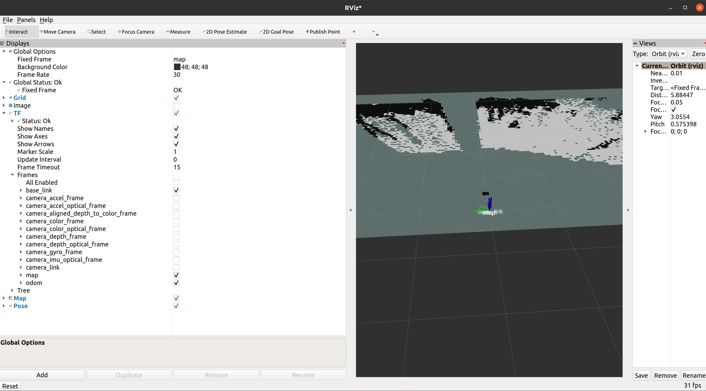

Launch
Instructions for Realsense Package Launch
The goal of this package is to be able to run SLAM on an Intel Realsense D435i. This process requires 3 primary nodes.
Realsense Node: The node should be able to take in Realsense data and output the color and depth image to the proper topics.
Rtabmap Node: The node reads in the color and depth image from the Realsense node and can create a map of the environment, a localization pose (and transform map->odom), and an odometry pose (and transform odom->base_link).
Transform Node: Currently, the only transforms published are the localization (map->odom), odometry (odom->base_link), and camera transforms (camera_link-> <camera_frames>). In order to connect these trees, a static transform (base_link -> camera_link) must be published such that the camera_link represents the camera pose and base_link represents the pose for the center of the robot.
Warning
Before running the rtabmap node, you must install it from source.
To verify that it works, run rviz2 and add the /map topic and the coordinate frames map, odom and base_link to the display. You should see an accurate costmap of the environment and the base_link camera moving based on the actual Realsense movement.
{kind=link}
ros2 launch realsense_mapping realsense.launch.py
ros2 launch realsense_mapping realsense_d435i.launch.py
ros2 launch realsense_mapping base_link_to_camera_link.launch.py